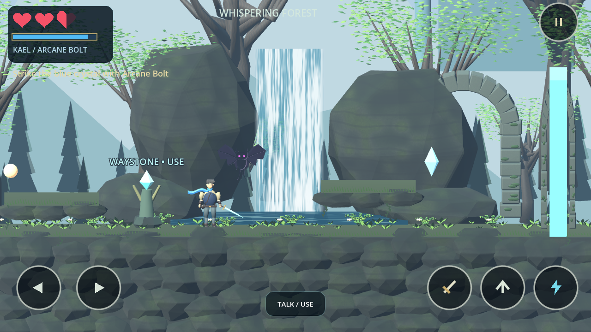
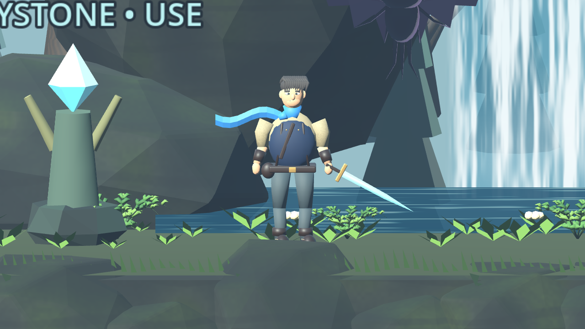
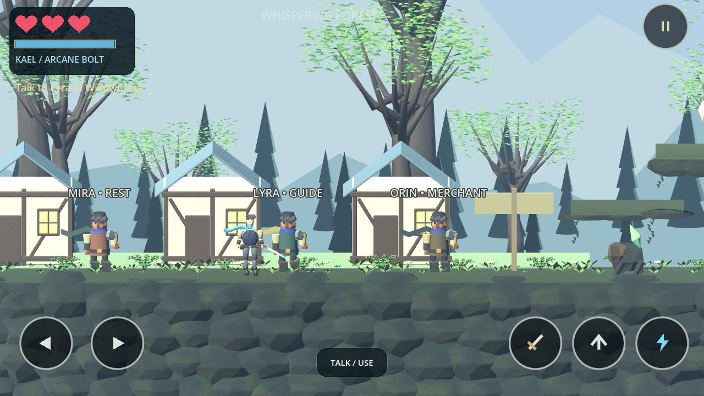
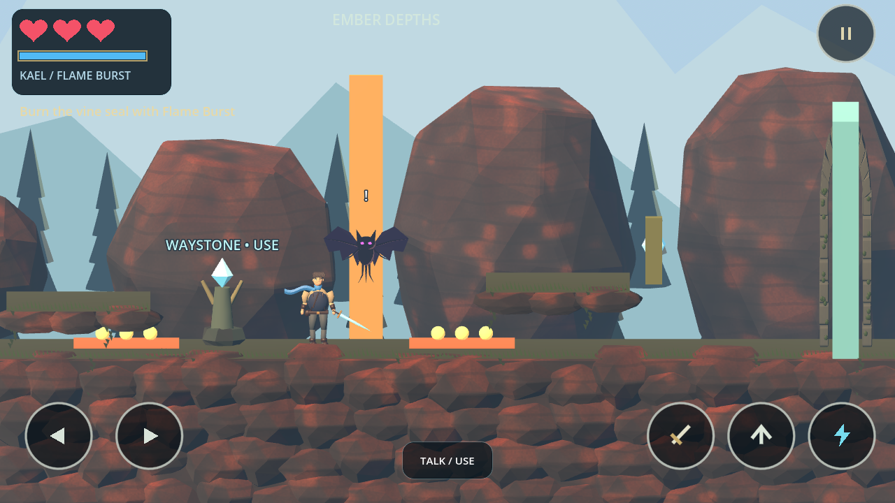
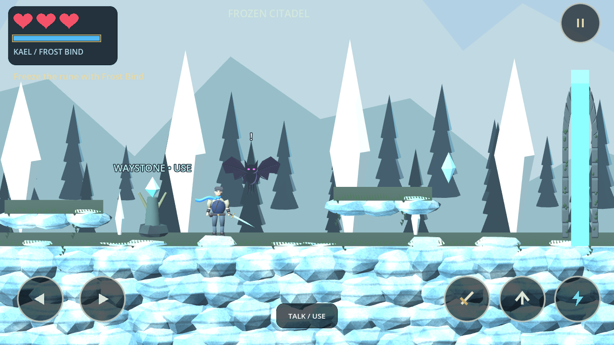
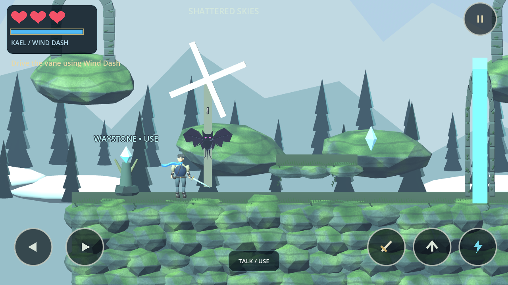
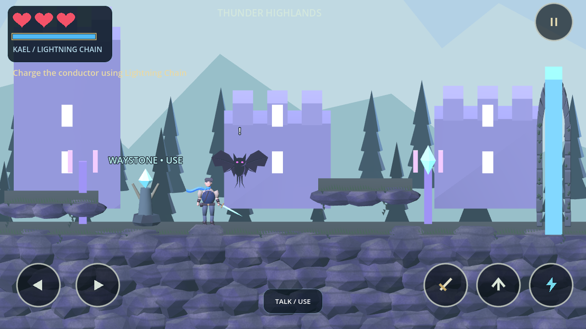
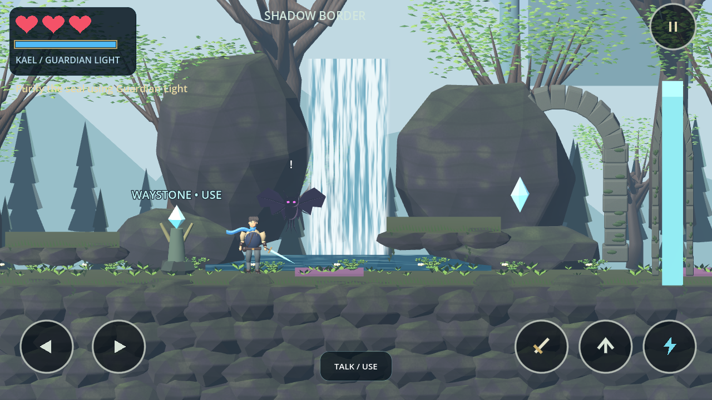
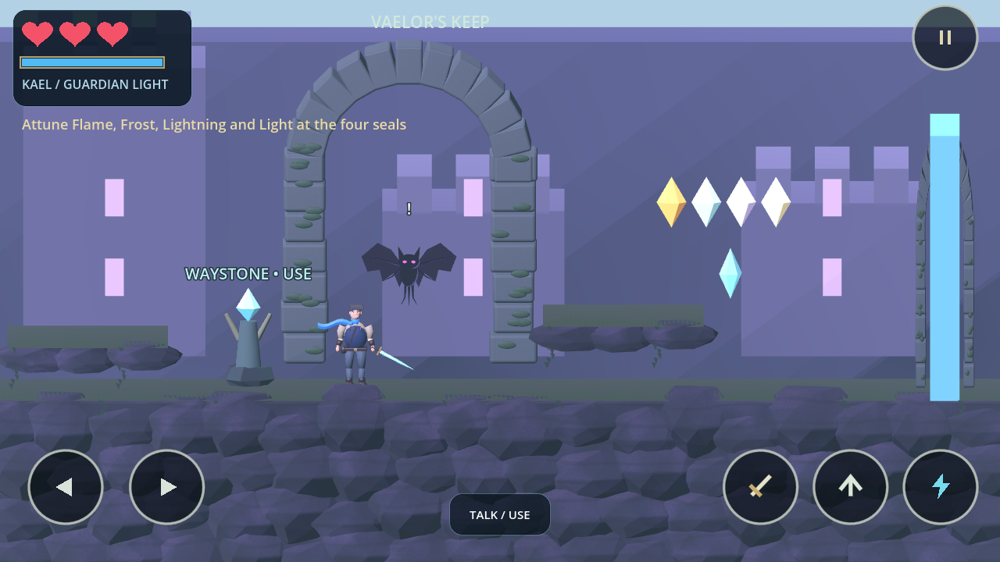

These are actual engine captures with staged positions. The concept is a separate generated visual target. Artistic parity and phone performance have not been established. Only current screenshots are displayed; older comparisons remain in Git history.









The regions reuse a shared 3D kit and route framework with different backdrop landmarks and mechanics. Character animation, legacy NPC/boss art, foliage and material painting remain release-quality work. The Android build has not been run on a phone.